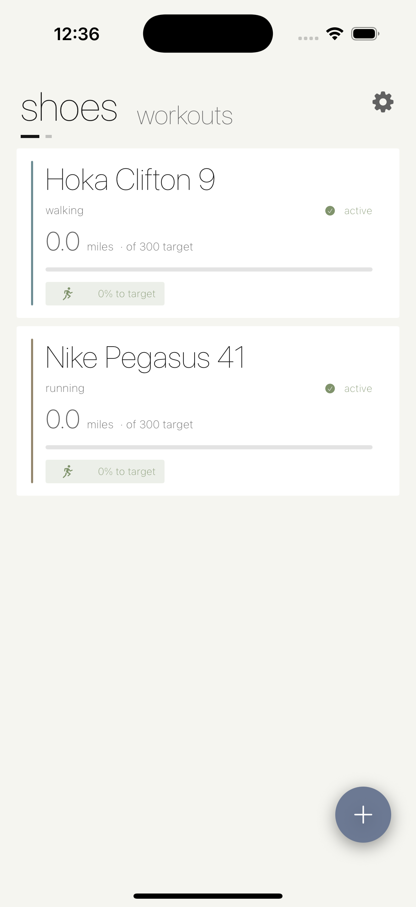
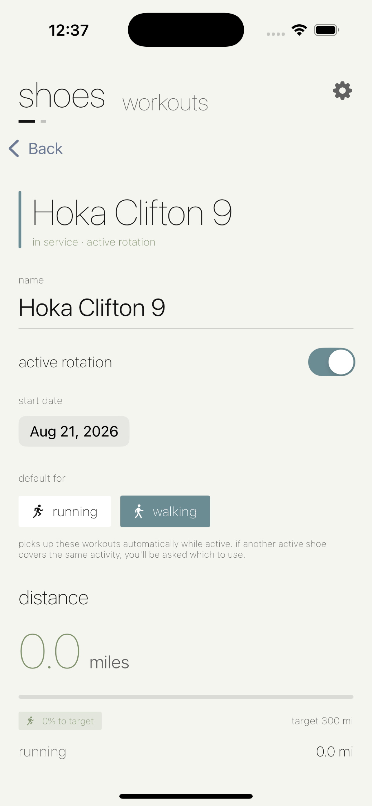
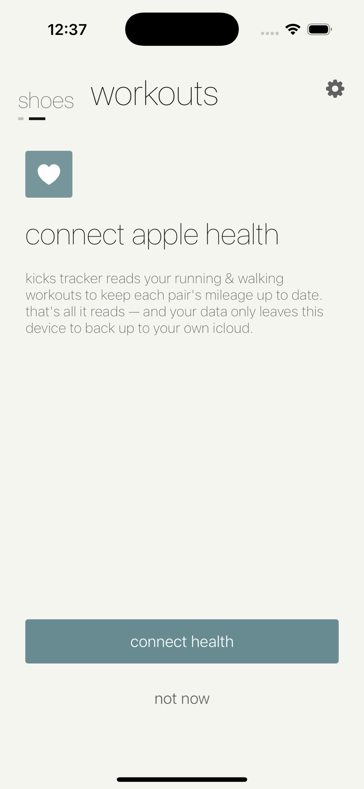
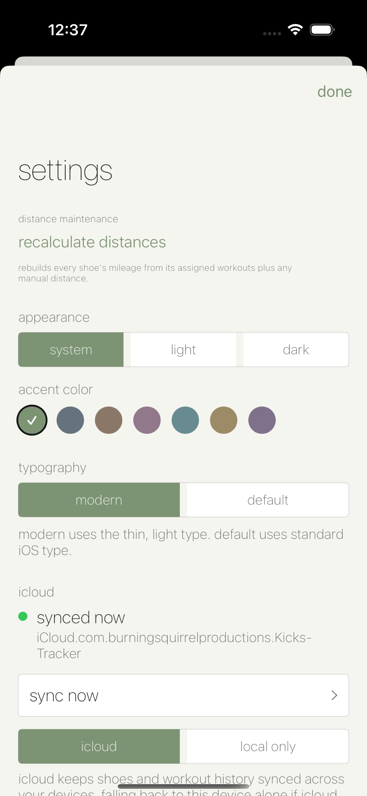
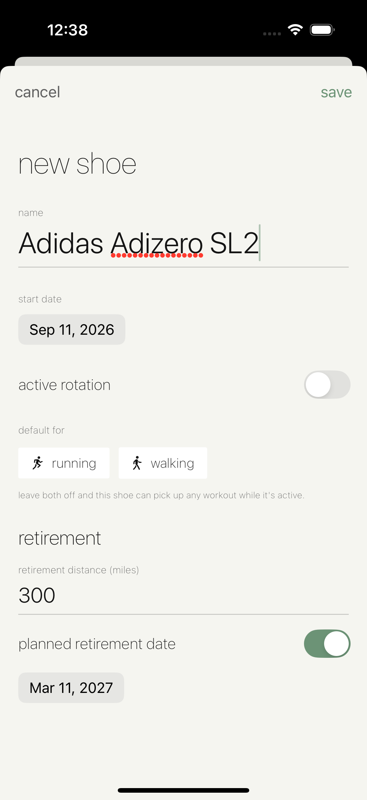
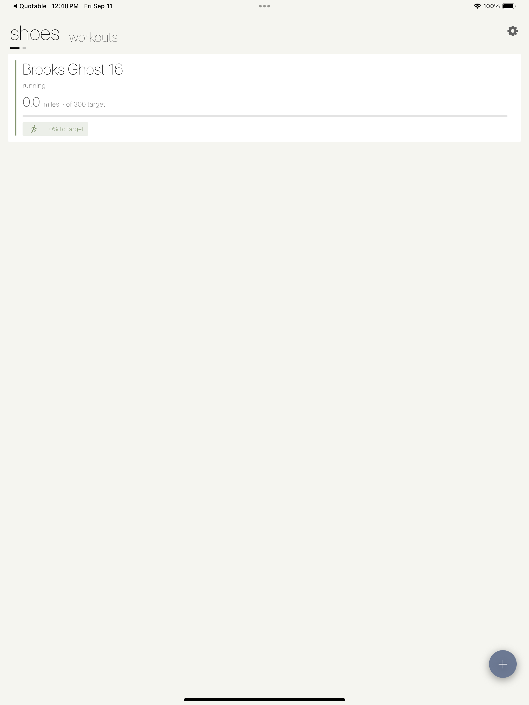
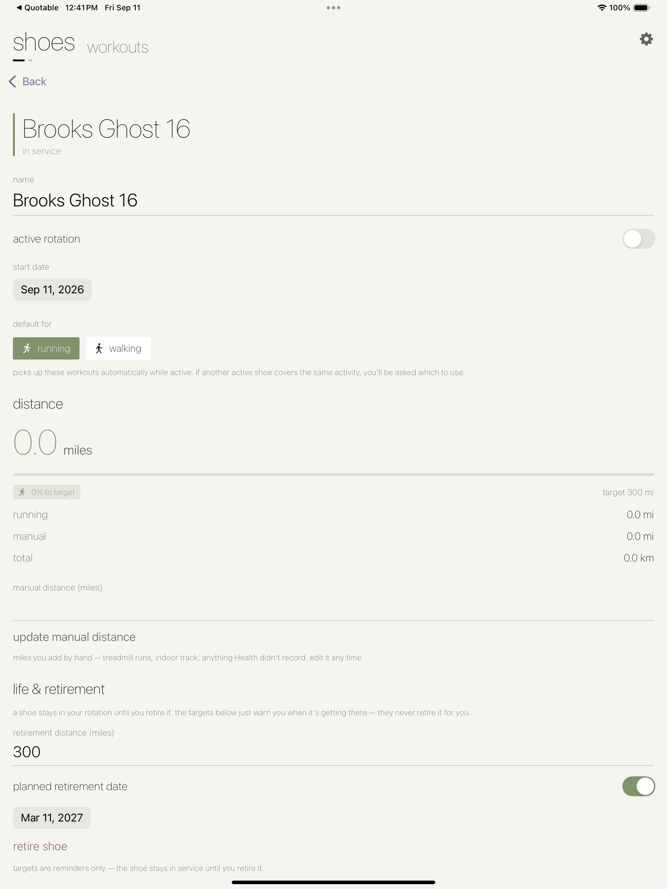
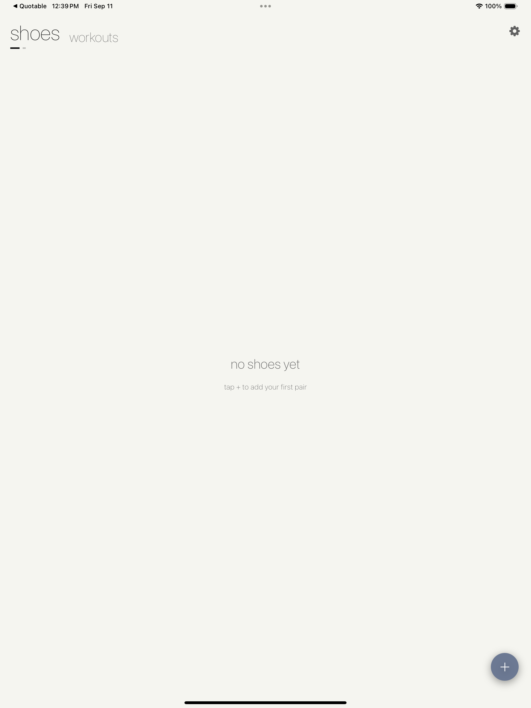
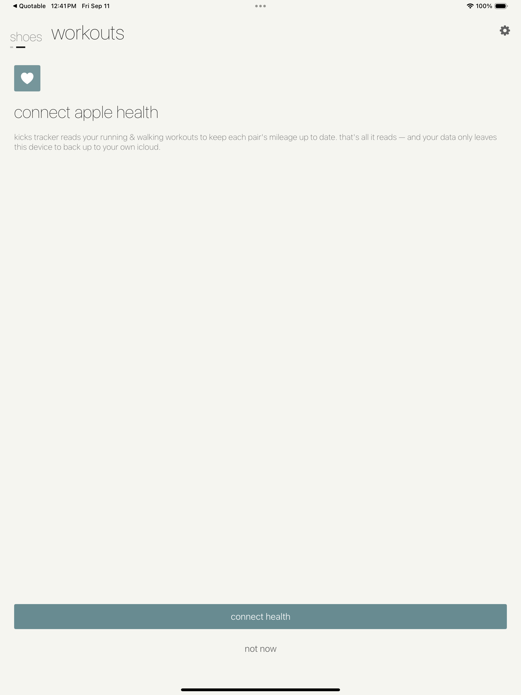
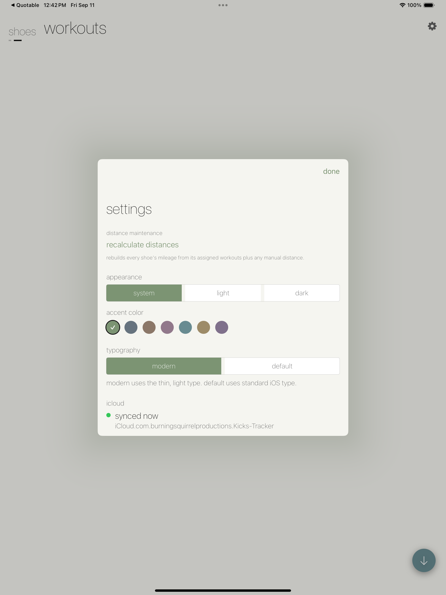

Kicks Tracker
Know exactly when to retire your running shoes — automatically, from workouts you already recorded.
Know exactly when to retire your running shoes — automatically, from workouts you already recorded.
Kicks Tracker pulls your running and walking workouts straight from Apple Health and assigns their distance to the right pair of shoes, so your mileage log keeps itself. Set an end-of-life mileage or a planned retirement date per pair, and each shoe tells you exactly where it stands.
iPhone





iPad





Recent running and walking workouts import from Apple Health — nothing to log by hand.
Designate a default shoe for running vs. walking and imported miles land on the right pair automatically.
Every shoe reports itself as in service, over mileage, due by date, or retired.
Manage an active rotation, review per-shoe history, and log pre-app miles manually.
Keep Exploring
Back to the full app portfolio